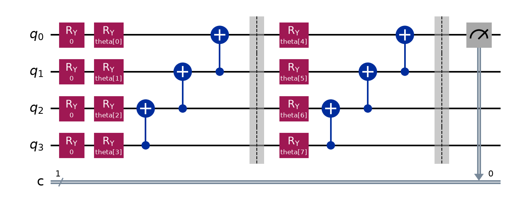

Quantum Machine Learning
A Variational Quantum Classifier, visualized
This is a simple 4-qubit VQC, trained with COBYLA on the classic Iris flower dataset. Each qubit corresponds to a measurement: sepal length/width, petal length/width. Move the sliders below to feed it a new flower and watch it predict the species.
Flower measurements
Prediction
How It Works
1. Encode
Each of the 4 measurements is scaled to an angle between 0 and π,
then applied an Ry rotation (one qubit per feature as mentioned).
This transforms the classical Iris data into quantum states that can be manipulated in the VQC.
2. Entangle
A trained ansatz layer rotates the qubits, then applies a CNOT "staircase" that lets the qubits interact. This is repeated once for a depth-2 VQC, which surfaced during ablation tests as the optimal circuit depth that maximizes accuracy vs. parameter noise.
3. Measure
Now that all qubit information is entangled, qubit 0 is measured. An OVR (one-vs-rest) approach
is used, leading to three separate circuits — one per species. Each circuit is evaluated, and the one most likely to read
out |1⟩ wins.
